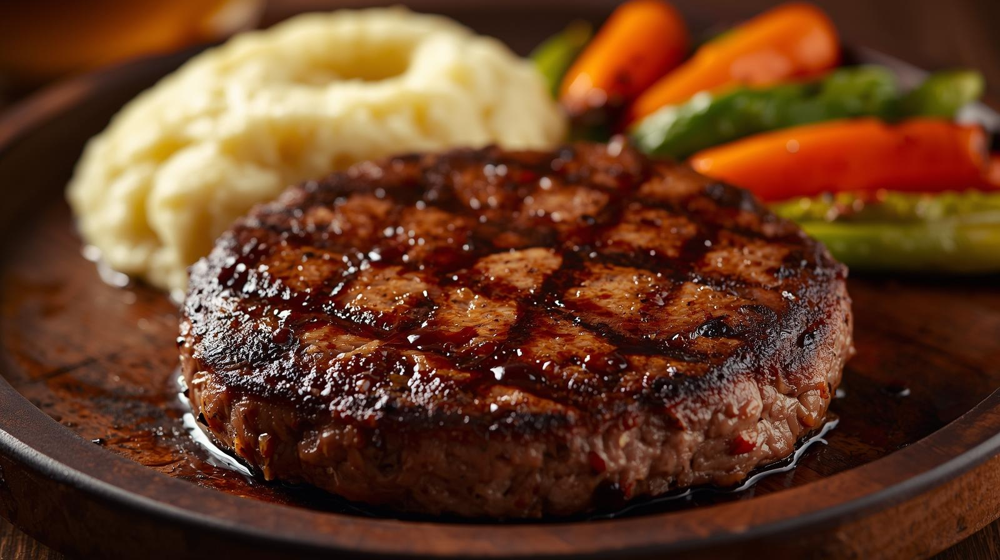

Hamburg steak

Description
Hamburg steak is a classic Western-style dish beloved by people of all ages. The combination of plump, juicy meat cooked to perfection and various sauces is truly appetising. Its appeal lies in being easy to prepare yet offering a sense of indulgence.
Using a blend of minced meats creates a delicious hamburg steak with a balanced flavour and fat content. Enjoy it with your favourite sauce, such as demi-glace, Japanese-style grated radish sauce, or tomato sauce.
Ingredients (Serves 2)
- Mixed ground meat: 250g
- Onion: 1/2
- Breadcrumbs: 3 tbsp
- Milk: 2 tbsp
- Egg: 1
- Nutmeg: a pinch
- Salt: 1/2 teaspoon
- Pepper: a pinch
- Salad oil: 1 tbsp
- Sauce (e.g. Demi-glace sauce)
- Demi-glace sauce (tinned): 1/2 tin
- Ketchup: 1 tbsp
- Worcestershire sauce: 1 tbsp
- Red wine: 2 tbsp
- Water: 3 tbsp
- Butter: 5g
Steps
- Finely chop the onion and fry in a frying pan with a little salad oil (not included in the quantities) until translucent. Set aside to cool slightly.
- Soak the breadcrumbs in milk until softened.
- Place the minced meat, fried onion, softened breadcrumbs, egg, nutmeg, salt, and pepper in a bowl. Mix thoroughly until sticky.
- Divide the mixture into two portions. Shape each into an oval patty, pressing out any air pockets. Indent the centre slightly to ensure even cooking.
- Heat salad oil in a frying pan. Place the patties in the pan. Cook over a high heat until browned on one side, then flip. Cover and steam-fry over a low heat for 7-8 minutes.
- Insert a bamboo skewer; if clear juices run out, they are cooked through.
- (Making the sauce) Return all sauce ingredients (except butter) to the pan used for the patties and bring to the boil. Once thickened, remove from the heat and stir in the butter until melted.
- Plate the hamburg steaks and generously pour over the sauce to serve. Warm vegetables or chips make excellent accompaniments.
Home